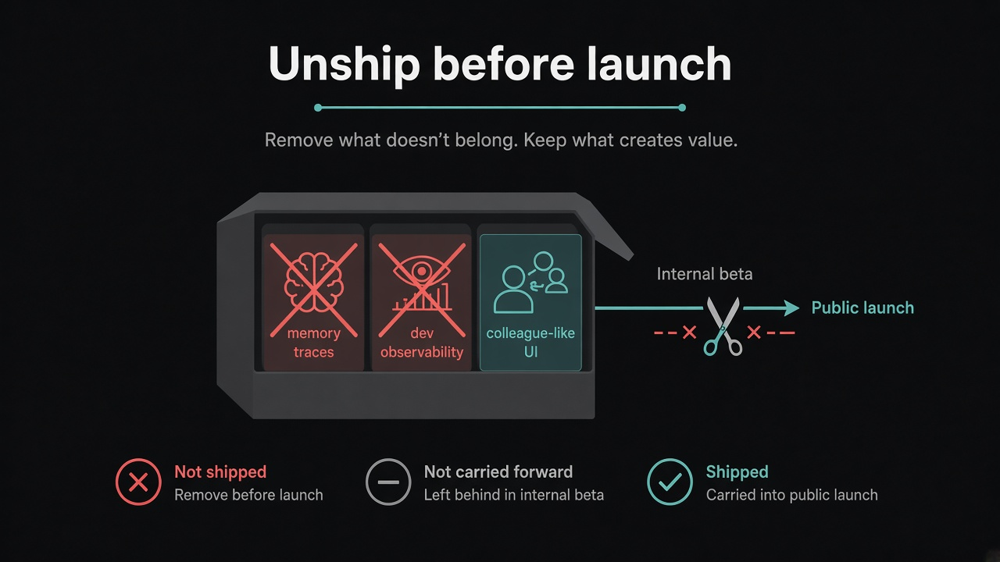

Unship before launch: colleague, not dashboard
Source: Lenny Rachitsky (@lennysan) summarizing Roman Ugarte on Grok Bot product lessons
original post
What it claims
Between internal beta and public launch, the Grok Bot team removed features they had already built — exposing model thinking, memory traces, and developer-style observability. Mental model: the product is a colleague. You wouldn't ask a teammate for second-by-second button presses, so the bot shouldn't either. “Unshipping” is a live opportunity: cut internal machinery that confuses the user experience even if it was useful for builders.
Why it matters for a PO
POs often protect sunk-cost features because “we already built it.” Launch readiness is often subtraction. A Product Goal is clearer when the Increment looks like the job (a helpful colleague) rather than the team's debugging needs. Use a colleague test when arguments are tied: how would a human teammate behave here?
3 takeaways
- Pre-launch: schedule an unship pass — what helps builders but hurts the user story?
- Colleague test beats feature debate when both sides sound right.
- Sunk cost is not a Product Goal; shipping org-chart leftovers is how products feel incoherent.
Practice this week
Pick one in-flight feature or UI that exists mainly for the team (debug panels, extra status noise, internal jargon). Run the colleague test. If a human teammate wouldn't behave that way, write a one-sprint unship proposal with the user-facing reason.